The Machine Learning Engine¶
Developers need to provide sample utterances for each intent (task) the assistant needs to identify, to train the machine learning model. The XO Platform Machine Learning (ML) engine will build a model that will try to map a user utterance to one of the VA’s intents.
The XO Platform allows fully unsupervised machine learning to constantly expand the language capabilities of your assistant – without human intervention. Unlike unsupervised models in which AI assistants learn from any input – good or bad – the XO Platform enables assistants to automatically increase their vocabulary only when the VA successfully recognizes the intent and extracts the entities of a human’s request to complete a task.
However, we recommend keeping Supervised learning enabled to monitor the VA performance and manually tune where required. Using the XO Platform, developers can evaluate all interaction logs, easily change NL settings for failed scenarios, and use the learnings to retrain the VA for better conversations.
This article discusses the processes behind the Machine Learning Engine, and how to perform training for optimum performance.
The Machine Learning Process¶
Intent Detection¶
The below diagram summarizes the intent detection pipeline for both training and prediction stages. For the training pipeline, the language detection and auto-correction are not run with the assumption that the trainer would be aware of the language in which training needs to be done and of the spellings to be used which might include domain-specific non-dictionary words like Kore, etc.
{kind=link}
Entities Extraction¶
Entity extraction involves identifying any information provided by the user apart from the intent that can be used in the intent fulfillment. Entities are of three types
- System entities like date, time, color, etc are provided out-of-the-box by the Platform. It includes nearly 22-24 entities and these are recognized by the ML engine automatically with no training except for string & description entity types.
- Custom entities are defined by the bot developer and these include the list of values – enumerated, lookup, and remote, regex expressions, and composite entities. These are also mostly auto-detected by the ML engine.
- NER or named entity recognition needs the training to identify the same entity type for different entities e.g. source & destination cities for flight booking intent, both of which are city type entities and the engine needs the training to distinguish between the two. NER can be conditional random field-based or neural network-based. CRF is preferred since it works on lesser data and has a faster training time compared to the NN-based method.
The following diagram summarizes the NER entity extraction pipeline.
{kind=link}
ML Output¶
The ML Engine runs the classification against the user utterance and generates the following scores output which Ranking and Resolver uses for identifying the correct intent:
- The probability Score for each class/intent, can be interpreted as follows
- Definitive Match/Perfect Match: If the probability score >0.95 (default and adjustable)
- Possible match: If the score is <0.95%, it becomes eligible for ranking against other intents which may have been found by other engines.
- The fuzzy score for each of the traits/intents which are greater than the Threshold score(default is 0.3) – Fuzzy logic goes through each utterance of a given intent and compares it against the user input to see how close the user input and the utterance are. The scores are usually from 0-100 and can be interpreted as follows:
- Definite Match/Perfect Match: If the score is above 95%(default & adjustable)
- Possible match: If the score is <95%, becomes eligible for Ranking against other intents which may have been found by other engines.
- CR Sentences– The ML engine also sends the top 5 ML utterances for each of those Intents which have qualified using the Threshold score. These 5 ML utterances are derived using the Fuzzy score. Ranking & Resolver uses these CR sentences to Rescore and choose the best of these utterances (compares each utterance against user input and chooses an utterance with topmost score)
Limitations¶
Though the ML model is very thorough, it has its own limitations, as follows:
- In cases where sufficient training data is not available, the ML model tends to overfit small datasets and subsequently lead to poor generalization capability, which in turn leads to poor performance in production.
- Domain adaptation might be difficult if trained on datasets originating from some common domains like the internet or news articles.
- The ability to control and interpret are hard because, most of the time, they work like a black box, making it difficult to explain the results.
- Cost is high both in terms of resources and time.
- The above two points also result in maintenance or problem resolution being expensive (again both in terms of time & effort) and can result in regression issues.
Hence, ML engines augmented by FM engines would yield better results. One can train the assistant with a basic ML model, and any minor issues can be addressed using FM patterns and negative patterns for idiomatic sentences, command-like utterances, and quick fixes.
Training the ML Engine¶
Training Overview¶
The Machine Learning Engine builds a model, based on training through intent detection and entity extraction, as follows:
- The intent prediction model is trained using statistical modeling and neural networks. Intent classification tags the user utterance to a specific intent. The classification algorithm learns from the set of sample utterances that are labeled on how they should be interpreted. Training utterance preparation and curation is one of the most significant aspects of building a robust Machine learning model.
- Entity Detection involves recognizing System Entities (Out Of the Box, Rule-based model), predicting Custom Entities (Custom-trainable Rules-based Model), and Named Entity Recognition (NER). System Entities are defined using built-in rules. However, using the NER approach, any named entity can be trained using Machine Learning by simply choosing the value from the ML training utterances and tagging them against the named entity.
Training the ML Engine involves the following steps:
- Choosing and gathering data that can be used as the training set,
- Dividing the training set for evaluation and tuning (test and cross-validation sets),
- Training a few ML models according to algorithms (feed-forward neural networks, support vector machines, and so on) and hyperparameters (for example, the number of layers and the number of neurons in each layer for neural networks),
- Evaluating and tuning the model over test and cross-validation sets,
- Choosing the best performing model and using it to solve the desired task.
The NLP module improves the performance by constantly validating the ML Engine and presents actionable insights to resolve the conflicts in intent and entity training.
Optimizing Intent Recognition¶
Adding Machine Learning Utterances¶
To add utterances to the Machine Learning Engine, please follow the steps below:
- Open the VA for which you want to add sample user utterances.
- Select the Build tab from the top menu.
- From the left menu, select the Natural Language -> Training option.
- By default, the tab with a list of all Intents would be displayed.
- You can use the filter option to restrict the display items to Dialog Intents, Sub Intent Dialogs or Sub-Intents. You can also choose to Include Hidden Tasks.
- Click Utterances > + Utterance against the Intent for which you want to add the utterances.
{kind=link}
- The user utterance page opens.
Here is where you can enter the utterances.
Note
Utterances greater than 3,000 characters in length are not allowed.
{kind=link}
Note
Utterances should be unique, but in the case of multiple intent models, the same utterance can be used across different models. Read more about multiple intent models below.
The negation of trained intents will be ignored by the Platform.
For example, consider a Travel Assistant trained on the Book a Flight utterance. A user might say: Your app takes me to the booking screen, but I don’t want to book a flight. In this case, the Book a Flight intent will not trigger.
Adding Entities for Named Entity Recognition¶
Apart from the intent, you can train your VA to recognize the entities, if present, in the user utterance. For example, if the user says: Book Flight from Hyderabad to Mumbai apart from recognizing the intent as “Book Flight” the source and destination of the flight should also be recognized. This can be achieved by marking the entities in the user utterance during training.
You can mark entities in your utterances, by selecting the entity value and clicking the corresponding entity name.
{kind=link}
The Platform will also try to identify and mark the entities. You have the option to accept or discard these suggestions. The Platform will identify the entities based upon:
- System entities;
- Static List of items – either enumerated or lookup;
- NER trained entities (from above).
For each of the entities thus marked, the confidence scores identified by the ML engine are displayed. This score is available only when the Conditional Random Field is selected as the NER model.
{kind=link}
Further, if you have enabled Entity Placeholders, the Platform will replace the entity values in the training utterance with entity name placeholders for training the ML model. Using actual entity values as well as multiple additions of an utterance with just a change in the entity value will have an adverse impact on the ML training model. The name of entities also starts contributing highly to the intent detection model.
Using Negative Patterns¶
Negative patterns can be used to eliminate intents detected by the Fundamental Meaning or Machine Learning models. Learn more.
Training your Assistant¶
After you added user utterances, you should train the Kore.ai interpreter to recognize the utterances and the associated user intent. When you have untrained utterances in your VA, the following message is displayed:
“You have untrained utterances in your ML model. Train your VA to update with all your utterances.”
Click Train. A status bar is displayed to show progress for utterance training. When complete, the Utterances trained successfully message is displayed. The user utterances are added to the Machine Learning Database. You can further configure the ML engine, identify the dummy intents when a user utterance contains the words that are not used in the VA’s training i.e. vocabulary, Learn more.
Once you have trained your VA, you can test it on the newly trained data. Learn how to test your assistant.
Auto-Training¶
By default, machine learning is automatically trained for any defined user utterances whenever a task is:
- Updated with a new
- Task name or intent name,
- Entity name or parameter name,
- Entity type,
- VA name
- Published
- Suspended by the Admin.
- Deleted by the Admin.
On the XO Platform, when auto-train is in progress, a warning message that “untrained user utterances cannot be identified“ is displayed if you try to test the VA before auto-train is complete.
To set up the Auto Train option, follow the steps below:
- Open the VA for which you want to modify the settings.
- Select the Build top menu option.
- On the left navigation menu, click Natural Language -> Thresholds & Configurations -> Machine Learning.
-
Select “Yes, add the successfully identified user utterances to the ML training model (Unsupervised Training)” for the Auto Training For Machine Learning option.
{kind=link}
Thresholds & Configurations¶
To train and improve the performance of your Assistant, Threshold and Configurations can be specified for all three NLP engines – FM, KG, and ML. You can access these settings by navigating to Build > Natural Language > Thresholds & Configurations.
Note
If your VA is multilingual, you can set the Thresholds differently for different languages. If not set, the Default Settings will be used for all languages.
The Threshold & Configurations for the ML engine are discussed in detail in the following sections.
Machine Learning Model Configuration Overview¶
The XO Platform ver 6.3 upgraded its Machine Learning (ML) model to v3. This includes a host of improvements and also allows developers to fine-tune the model using parameters to suit business requirements. The developers can change parameters like stop word usage, synonym usage, thresholds, and n-grams, as well as opt between Deep Neural Network or Conditional Random Field-based algorithms for the Named-Entity Recognition model.
In v8.0 of the Platform, provision has been enabled to use the v5 of the ML intent model and externalize several hyperparameters. This can be achieved through the Advanced NLP Configuration. Learn more.
When the Multiple Intents Model =is enabled, the ML Engine maintains multiple intent models for the VA as follows:
- Bot level Intent Model containing all the Primary Intents of the assistant which includes Primary Dialog Intents, and Alert Task Intents.
- Dialog Intent Models – one for every primary dialog intent and sub-dialog intent which includes the Sub-intent nodes added to the dialog definition, Sub-intents scoped as part of the Group nodes and Interruption exceptions added to the dialog definition.
You can configure the Thresholds and Configurations separately for each of the intent models. This includes:
- All the configurations under Thresholds and Configurations – ML Engine as discussed in the below section;
- All the ML Engine configurations under the Advanced NLP Configurations discussed here.
The Multiple Intent Model¶
Training of “similar intents” with different purposes is usually difficult as the training given for an intent can add noise or conflict with the training given to the other intent. This is more evident in cases where the intents have a contextually different meaning or purpose.
Consider the following case: A user is in the Make a Booking task, so any query related to the Booking refund policy should be answered within this context. However, the query can also trigger FAQs from Cancel a Booking.
{kind=link}
Enabling the Multiple Intent Models from the Advanced NLP Configurations allows you to have a dedicated ML model only for the primary intents and separate ML Models for each of the dialogs with their associated sub-intents so that the intent detection of sub-intents gets preferential treatment.
Continuing with the above example, with a Multiple Intent Model, you can define a separate context-based FAQ and ensure a proper response to the user.
{kind=link}
All the primary intents of the VA will be part of the Bot Level Intent Model. Each of the Dialog tasks will have its own ML Model consisting of all the sub-intents added to it. The Thresholds and Configurations can be individually configured for each of the models. For example, the Bot Level Intent Model can use ‘Standard’ Network Type and a specific Dialog’s intent model can use ‘LSTM’ Network Type.
Configuring Machine Learning Parameters¶
The XO Platform provides language-wise defaults for the following parameters related to the ML performance of your VA. You can customize them to suit your particular needs.
{kind=link}
Key Pointers on ML configurations
- The illustration below shows the list of all possible configurations and these are available for both single and multiple intent models.
- When the multiple intent model is enabled, you can configure the individual models by selecting the Configure link against the model.
- While there is only one VA level intent model, you can add multiple dialog intent models using the Add New button and configure each as per your requirements.
- Advanced ML Configurations can be applied from here or from the Advanced NLP Configurations section. 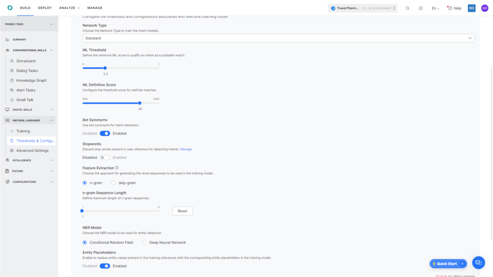
{kind=link}
Network Type¶
You can choose the Neural Network that you would like to use to train the intent models. This setting has been moved to Machine Learning from Advanced NLP Configurations in v8.1.
You can choose between the following types. Based on the selection additional configurations can be done from the Advanced NLP Configurations section. Learn more.
- Standard.
- MLP-BOW – The bag-of-words model is a simplifying representation used in natural language processing and information retrieval. In this model, a text is represented as the bag of its words, disregarding grammar and even word order but keeping multiplicity.
- MLP-WordEmbeddings – Word embedding is the collective name for a set of language modeling and feature learning techniques in natural language processing where words or phrases from the vocabulary are mapped to vectors of real numbers.
- LSTM (Long Short-Term Memory) is an artificial recurrent neural network (RNN) architecture used in the field of deep learning. LSTM has feedback connections and hence has the ability to capture long-term dependencies for texts of any length and is well suited for longer texts.
- CNN (convolutional neural networks) is a class of deep neural networks in deep learning most commonly applied to analyzing visual imagery. It makes use of the word order for a specific region size and has achieved remarkable results on various text classification tasks.
- Transformers use a Universal Sentence encoder in the vectorization stage of the Training pipeline. The output of the sentence encoder is fed to a Multi-Layer perceptron network for training. SentenceEncoder has an inbuilt capability of understanding the semantic similarity between sentences taking into account the synonyms and various usage patterns of the same sentence. The Universal Sentence Encoder encodes text into high-dimensional vectors that can be used for text classification, semantic similarity, clustering, and other natural language tasks. The model is trained and optimized for greater-than-word length text, such as sentences, phrases, or short paragraphs. It is trained on a variety of data sources and a variety of tasks with the aim of dynamically accommodating a wide variety of natural language understanding tasks. The input is the variable-length English text and the output is a 512-dimensional vector.
- KAEN (Kore Advanced Embeddings Network) – Models trained with Sentence Embeddings alone can not understand the domain-specific terminology especially if the words from training are non-dictionary words. Kore.ai provides a model which can understand the meaning of the sentence and at the same time give importance to the domain-specific terminology. There are two parallel layers in work in this model – one to optimize the weights against the sentence embeddings and the other to optimize the word importance for a given sentence. The activation function used for these two layers is RReLU (Randomized Leaky Rectified Linear Unit, Learn more.
- Zero-Shot Model with OpenAI: Helps define descriptive intents that the VA identifies in the user utterance based on semantic similarity without requiring training data.
- Few-shot Model (Kore.ai Hosted Embeddings): Helps define more number of granular intents that describe the user’s intention in the utterance more accurately with limited training requirement.
Zero-Shot Learning Model with OpenAI¶
Important
Before using this feature, enable the OpenAI Integration.
The XO platform allows developers to create a Natural Language Understanding (NLU) model through OpenAI integration integration for use in a virtual assistant. The Zero-Shot Learning (ZSL) Model allows developers to quickly create the model without needing training data.
Instead, it relies on a pre-trained language model and a logic learning machine (LLM) to identify the intention of a user through the utterance based on semantic similarity.
This feature uses the intent name to map or identify the intent name’s similarity with the user input to predict the utterances accurately.
Thus, the intents have to be defined very well. This approach is well-suited for virtual assistants with relatively fewer intents and distinct use cases.
Benefits
- The ZSL network type helps create an NLU model quickly as it does not require training data.
- Uses OpenAI’s LLM & Generative AI models to identify the intent names by comparing the user utterance.
- The user must only provide a descriptive intent name to leverage this functionality.
Important Considerations
- This model identifies and defines granular intents describing the purpose of the user interaction, and not what the virtual assistant can do.
- ZSL works well when the virtual assistant has good intent coverage.
- Utterances are required to train entities.
- Intent names and user utterances will be shared with OpenAI.
- Bot Designer should enable the integration with OpenAI by providing the API Key.
- When using ZSL, dialog intents and FAQs need to be treated the same.
- The ZSL network type applies only to the ML engine and not the FM, KG, and Traits engines. The Platform continues to use Patterns for Intent matching by the FM engine.
- There is no option to tweak the training if something does not work.
- ZSL is available in the bot-level model configuration and not in the dialog intent model.
- Multiple intent models are not supported when Zero-Shot is enabled.
- Bot Synonyms and stop words are not used for intent detection.
- When ZSL is enabled, all the matches from the ML engine are definite.
- The Definite Score is changed to 80% by default for ZSL based on the NLP performance and accuracy.
- Only the Incorrect Patterns and Wrong Entity Annotation goal-driven validations are enabled when Zero-Shot Learning Model with OpenAI is enabled.
How it works
- The user defines the intent to be identified by the system. For example, in the banking use case, instead of saying “I see invalid transactions“, the intent you provide has to be more descriptive within a subject, object, and nouns. It should be something more descriptive like “I received an alert on my phone about transactions that I have not done.“. This helps the virtual assistant correctly identify the intent “Dispute credit card Transaction.“
{kind=link}
If required, the user can add dialogs for the intents.
- The user should enable the Zero-Shot Network Type under Training.
- The system identifies the most logical intent by matching the user utterance with the defined intent names (without training utterances). It then responds with the relevant intent. Intents identified by the Zero-Shot model are considered definitive matches.
Rescoring of Intents for Definitive Matches
When Prefer Definite Matches is disabled, and Rescoring of Intents is enabled, the platform continues rescoring for definite matches based on the similarity between the training data and user utterance to discover the winning intent(s). However, enabling Prefer Definite Matches is recommended to rescore for definitive matches based on the similarity between the intent names and user utterances.
Demonstrating with an Example
For an online shopping virtual assistant, the following needs to be ensured to implement the ZSL model:
- The intent names should be very descriptive.
- Provide descriptive names, as the model relies heavily on intent names.
When an intent is named “Show the status of my order,” for example, under Build > Conversational Skills > Dialog Tasks.
{kind=link}
For a new bot, under Build > Natural Language > Training > Intents, ensure that no training utterances are added for the intent.
{kind=link}
When you enable ZSL network type for an existing bot, the system does not identify the intent for its training data/utterances.
Note
For more descriptive intent names like “I want to place an order” and “Will I be able to place an order?”, the system considers the punctuation and the case (upper or lower) to identify the intent.
Enable the Zero-Shot Learning Network Type
To enable the ZSL model, follow the steps below:
- Navigate to Build > Natural Language > Thresholds and Configurations > Machine Learning.
- Select Zero-Shot Model with OpenAI in the dropdown list for Network Type, and click Save. 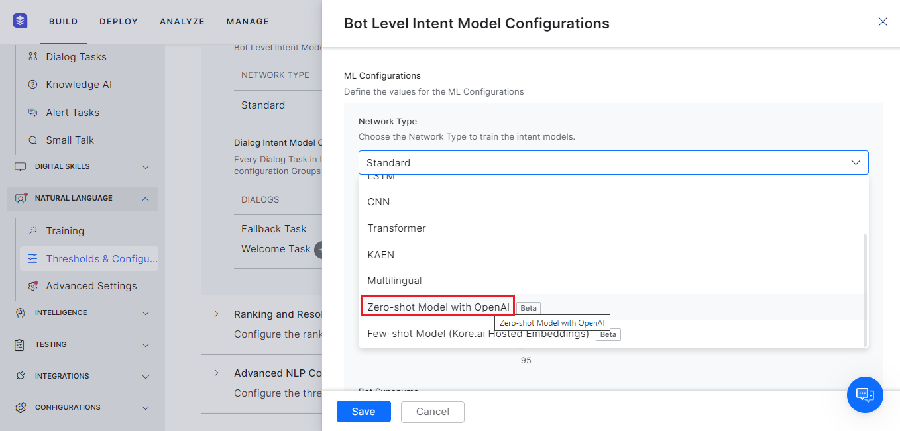
{kind=link}
Testing the Utterance
To test the utterance for the Zero-Shot Learning Model with OpenAI Network Type, follow the steps below:
- Navigate to Build > Testing > Utterance Testing.
- Type the utterance.
Example 1: “I don’t want the product.” 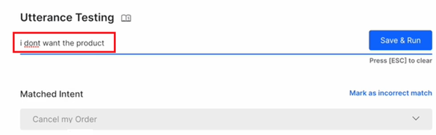
{kind=link}
Example 2: “Where is my delivery?” 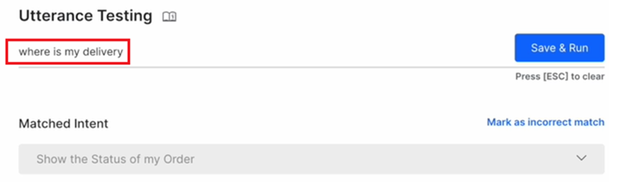
{kind=link}
- Click Save & Run.
- The Machine Learning Model identifies and displays the following intents in the NLP Analysis window for each example.
Example 1: Cancel My Order for “I don’t want the product.” 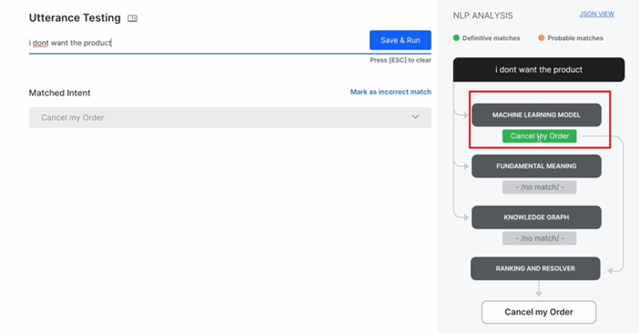
{kind=link}
Example 2: Show the status of my order for “Where is my delivery?” 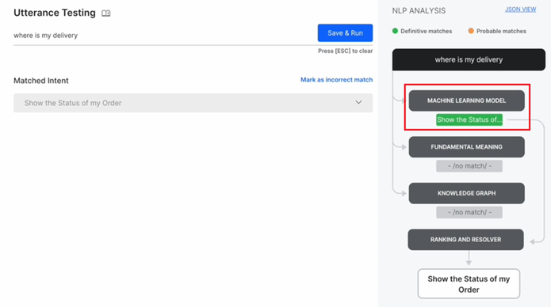
{kind=link}
The most relevant intent is identified and considered a definitive match.
Few-Shot Model (Kore.ai Hosted Embeddings)¶
The Few-shot model allows you to train your virtual assistants using the task names and a few training utterances if required. Kore.ai uses custom NLU models pre-trained with large datasets to identify the intents based on their semantic similarity in the user utterance. This model works in the same manner as the ZSL Model except that more intents are considered while identifying the user’s intention in the utterances through LLMs hosted by the Platform. This model does not share any data externally and needs no additional enablement or costs.
Few-Shot as the Default ML Model
The Platform sets the Few-Shot model as the default ML Engine model selection with the recommended thresholds for new standard workspace bots when English is selected as the NLU Language.
{kind=link}
Since this model helps obtain good accuracy levels with fewer training utterances, it works best for the following configurations and is set as the default ML Model:
ConfigurationDefault Setting
| ML Engine |
|
| Ranking & Resolver | ‘Rescoring of Intents‘ (by the R&R engine to find the top-qualifying/winning intents) is disabled. |
| Fundamental Meaning | ‘Intent Detection using Task Name Words’ (to determine if the FM Engine should identify the intents using the words in the Task Name) is disabled. |
| Advanced NLP Settings |
|
Benefits
- The FSL model requires limited utterance training.
- Provides consistent responses with improved predictability.
- Easy to scale performance with additional training.
Important Considerations
- It is important to give descriptive names for your tasks so that the model finds the semantic similarity between the task names and the user utterances.
- This model identifies and defines granular intents describing the purpose of the user interaction, and not what the virtual assistant can do.
- Works well when the virtual assistant has good intent coverage.
- You may need to add training utterances to identify entities by the NER model for specific scenarios.
- When using FSL, dialog intents and FAQs need to be treated the same.
- Bot Synonyms, Stop Words and a few other ML Configurations are not used by the Few-Shot Model (Kore.ai Hosted Embeddings).
- The new Few-Shot Model (Kore.ai Hosted Embeddings) for Traits in NLP V3 allows the NLP Engine to train and identify Traits when set as the default model. This feature is available for only the new bots that have English as the NLU language. Learn more.
- Intents are rescored by the R&R Engine by comparing the closest training sentences (including the task name) with the user utterance.
How it works
The model uses embeddings generated using large pre-trained language models to compare the similarity between the training data and the user utterances.
-
You can start by just creating intents with descriptive names. Post-testing the performance of the intent, you can consider adding a few utterances only for the failed variations. For example, in the banking use case, when the utterance “I forgot my pin” (which is very straightforward) is given, the virtual assistant correctly identifies the intent “reset credit card pin.” 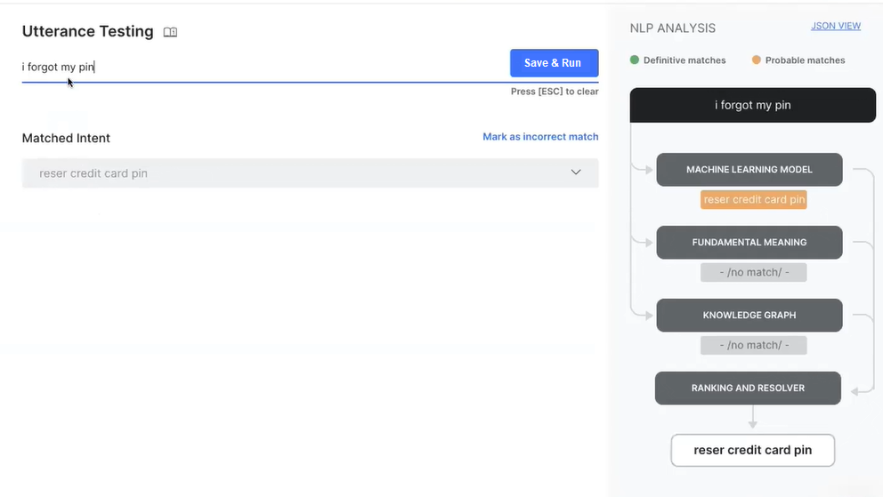
-
However, for a more complex utterance like “I received an alert on my phone about transactions that I have not done.“, the virtual assistant identifies the intent “Dispute credit card Transaction” correctly only when a training utterance like “Unidentified Transactions” is added to nudge the model in the right direction. 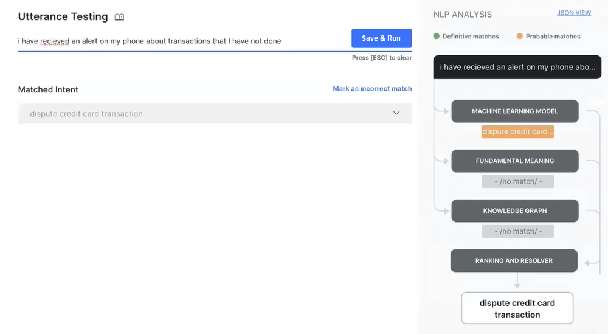
-
This behavior varies from scenario to scenario where the correct intent can be identified accurately based on the training utterance you provide.
- The system identifies the most logical intent by matching the user utterance(s) with the defined intent names. It then responds with the relevant intent. Intents identified by Few-Shot are considered definitive matches.
{kind=link}
{kind=link}
Enable the Few-Shot Network Type
To enable the FSL model, follow the steps below:
- Navigate to Build > Natural Language > Thresholds and Configurations > Machine Learning.
- Select Few-Shot Model (Kore.ai Hosted Embeddings) in the dropdown list for Network Type, and click Save. 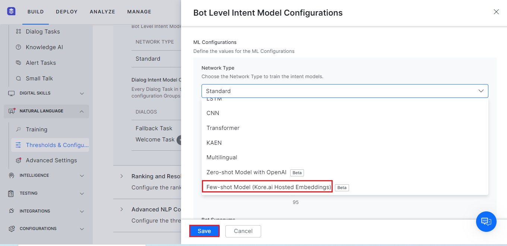
{kind=link}
Support for Standard Bot Traits¶
The Few-shot Model is now the default model for managing Traits. This feature is only available for the new bots created in NLP V3.
Note
All the older bots on NLP V3 will continue to use the Standard ML Model as the default traits model instead of the Few-shot model.
To manage the Few-shot Model as the default Network Type for traits, follow the steps below:
- Click Build on the top menu.
- Navigate to Natural Language > Training, and click the Traits tab.
- Click the trait you want to configure from the list. Otherwise, add a new trait by clicking Add Traits.
- In the resulting window, click Manage to view the Manage Traits panel.
- The system selects Few-shot Model (Kore.ai Hosted Embeddings) by default as the Network Type, and the following settings appear:i. ML Threshold is set to the default value 0.5.ii. The Feature Extraction and Sequence Length options available for Standard Models don’t appear as they’re not applicable. 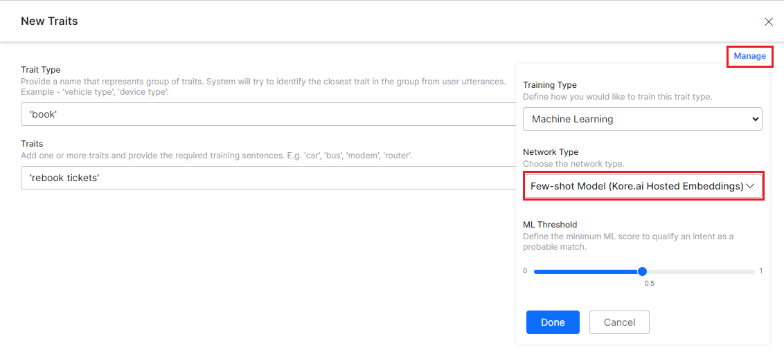
{kind=link}
Support for Bot Synonyms¶
The Few-Shot model supports Bot synonyms where a specific word in the user utterance including an abbreviation, acronym, or enterprise-specific word like “A/C” is replaced by the relevant term or word (Account) which will enable better intent recognition.
For example:
When the User utterance is “Check my a/c balance,” the Training data matched is “Check my account balance.”
In this case, MPNET provides a high score (ML Threshold and ML Definitive scores) where the intent/entity/question is understood by the Virtual Assistant and matched to the training data. This support is helpful for migrating the solution-specific bots to the LLM approach.
Enabling Bot Synonyms
On the Platform, you can use Bot Synonyms as part of the Few-shot model by enabling the Bot Synonyms option in the Bot Level Intent Model Configurations window (after selecting the Few-Shot Model (Kore.ai Hosted Embeddings) Network Type under BUILD > NATURAL LANGUAGE > THRESHOLDS AND CONFIGURATIONS.
{kind=link}
When the Bot Synonyms option is enabled, the following happens:
- The Platform looks for any synonyms present in the training utterances and replaces them with the Synonym Key.
- The training sentences with the replaced words are used for training the model.
- The modified sentence is used for intent identification (generation of embedding as well as similarity checks).
NLU Language Selection¶
When you select the Zero-shot Model with OpenAI or Few-shot Model Network Types to train the intent models (on the Bot Level Intent Model Configurations page), you must ensure that the NLU Language enabled is English (default) under Configurations > Languages.
If you enable another language, the system does not allow selecting these two network types, and displays an error message as shown below:
{kind=link}
ML Threshold¶
ML Threshold defines the criteria for qualifying a probability score of an intent to be a possible or definite match. The default value is set to 0.3. This means that any intent which scores >0.3 is considered as a qualified Intent. Intents scoring < 0.3 are rejected.
ML Definitive Score¶
Configure the threshold score for definite matches, which can be set to a value between 80-100%, with the following classification:
- Probability Score – If the probability score by the classification Engine is >0.95 (default which is adjustable using “ML Definitive Score” divided by 100) Intent is considered as a Definite Match/Perfect Match.
- Fuzzy logic goes through each utterance of a given Intent and compares it against the user input to see how close the user input and the utterance are (scores are usually from 0-100). If the score is above 95% (default which is adjustable using “ML Definitive Score”) Intent is considered as a Definite Match/Perfect Match.
Bot Synonyms¶
This setting is Disabled by default. Enable this option if you would like to consider intent synonyms in building the ML model.
Enabling Synonyms allows the ML model to take the synonyms defined under “Synonyms and Concepts” to be considered while training the ML model. It helps in avoiding preparing duplicate utterances.
For example: “I want to book a flight”.
If we had defined “buy”, “reserve”, “purchase” as synonyms of “book” and “ticket” or “seat” as synonyms of “flight”, then you need not add training utterances like “I want to buy a ticket” or “I want to reserve a seat” etc.
Stop Words¶
This setting is Disabled by default. Enable this option if you would like to remove the stop words in the training utterances in building the ML model. Once enabled, stop words are used to filter out the words/phrases from the Training utterances before training the ML model and are removed from the user utterance before prediction.
This setting is not valid when Network Type is set to Transformer.
Support for Non-CS Languages¶
The XO Platform now supports the following 150 Polish stop words for ML Engine Training, in addition to the current stop words:
Alphabet Polish Words
| A | "a","aby","ach","acz","aczkolwiek","aj","albo","ale","ależ","ani","aż"
|
| B | "bardziej","bardzo","bez","bo","bowiem","by","byli","bym","bynajmniej","być",
|
| C | "cali","cała","cały","chce","choć","ci","ciebie","cię","co","cokolwiek","coraz",
|
| D | "daleko","dla","dlaczego","dlatego","do","dobrze","dokąd","dość","dr","dużo","dwa",
|
| G | "gdy","gdyby","gdyż","gdzie","gdziekolwiek","gdzieś","go","godz"
|
| H | "hab"
|
| I | "i","ich","ii","iii","ile","im","inna","inne","inny","innych","inż","iv","ix","iż"
|
| J | "ja","jak","jakaś","jakby","jaki","jakichś","jakie","jakiś","jakiż","jakkolwiek","jako",
|
| K | "każdy","kiedy","kierunku","kilka","kilku","kimś","kto","ktokolwiek","ktoś","która","które",
|
| L | "lat","lecz","lub"
|
| M | "ma","mają","mam","mamy","mało","mgr","mi","miał","mimo","między","mnie","mną","mogą","moi",
|
| N | "na","nad","nam","nami","nas","nasi","nasz","nasza","nasze","naszego","naszych","natomiast",
|
| O | "o","o.o.","obok","od","ok","około","on","ona","one","oni","ono","oraz","oto","owszem"
|
| P | "pan","pana","pani","pl","po","pod","podczas","pomimo","ponad","ponieważ","powinien","powinna",
|
| R | "raz","razie","roku","również"
|
| S | "sam","sama","się","skąd","sobie","sobą","sposób","swoje","są"
|
| T | "ta","tak","taka","taki","takich","takie","także","tam","te","tego","tej","tel","temu",
|
| U | "u","ul"
|
| V | "vi","vii","viii","vol"
|
| W | "w","wam","wami","was","wasi","wasz","wasza","wasze","we","według","wie","wiele","wielu","więc",
|
| X | "xi","xii","xiii","xiv","xv"
|
| Z | "z","za","zapewne","zawsze","zaś","ze","znowu","znów","został","zł","żaden","żadna","żadne",
|
Feature Extraction¶
Using this option (introduced in ver8.0) you can associate the ML intent model with the preferred algorithm. This option is not valid when Network Type is set to MLP WordEmbeddings, LSTM, CNN, and Transformer.
The options are:
- n-gram – this is the default setting and can be used to define the contiguous sequence of words to be used from training sentences to train the model. For example, if Generate weather forecast report is the user utterance and if the n-gram is set to 2, then Generate weather, Weather forecast, and Forecast report are used in training the model. If n-gram is set to 3, then Generate weather forecast, and Weather forecast report will be used in training the model. You can set the n-gram using the n-gram Sequence Length – The minimum n-gram limit is 1 by default. You can set the maximum limit up to 4.
- skip-gram – when the corpus is very limited or when the training sentences, in general, contain fewer words then skip-gram would be a better option. For this you need to define:
- Sequence Length – the length for skip-gram sequences, with a minimum of 2 and a maximum of 4
- Maximum Skip Distance – the maximum words to skip to form the grams, with a minimum of 1 and a maximum of 3.
The NER Model¶
Choose the NER model to be used for entity detection. The XO Platform provides two entity recognition models for training using NER that follow the same approach with
- Conditional Random Fields: lightweight and is easy to use for all sizes of datasets
- Neural network: works well with medium to large datasets but training time is very high
Note
The CRF model supports all languages and the Deep Neural Network model supports English, Spanish, German, and French. This option appears on the screen only when the selected VA language is supported by the Deep Neural Network model.
NER Threshold¶
NER Threshold is a user-configurable parameter to set the minimum confidence score required for the system to identify and return only entity values above the set threshold. An entity with a confidence score below the set threshold is considered a Probable Match and one with a score that is equal to or above the threshold is considered an Exact Match.
This setting helps filter out low-confidence recognitions and remove false positive results. This is beneficial for improving the accuracy of Named Entity Recognition (NER) results by excluding less reliable or uncertain identifications.
{kind=link}
Important Considerations
While using the NER Threshold setting, the following considerations should be made:- This feature is useful for identifying NER entities for CRF and DNN methods.
- The user can set the threshold value between 0 and 1 in multiples of 0.01.
- For all the existing bots and languages, the default threshold value is 0, for all new bots, the default value is configurable. To 0.3 currently.
- During runtime, the system returns only the matched entity values with a confidence score above the threshold.
- The confidence score based on this setting is reflected in the following locations:
- Utterance Testing: On the left panel.
- Batch Testing: In the CSV file and More Details section of the Test Case Details screen.
- Health and Monitoring Dashboard: In the More Details section of the Test Case Details screen.
- In scenarios where multiple entity values are identified for an entity, the system compares the confidence scores and returns the entity value with the maximum confidence score.
- When multiple entities are identified for a value, the system compares the confidence scores and qualifies the entity with the maximum confidence.
Example of NER Identification
For a flight booking service, when you set the NER Threshold value for the following entities:
- Source City
- Destination City
- Date of Travel
The training utterance is as follows:
“I want to book a flight from New York to Boston.”
When the user provides the following inputs to the virtual assistant:
- Utterance 1: “I want to fly from New York to Boston.”
- Utterance 2: “Book a ticket to New Jersey from Boston.”
- Utterance 3: “Help me book a flight ticket on 25th of July, 2023.”
The system identifies all the entity names and checks their NER confidence score. Only the matched entities with a confidence score above the set limit are returned instead of all the recognized entities. Thus, the following results are returned:
- Source City: New York
- Destination City: Boston
- Date of Travel: 25 July 2023
Entity Placeholders¶
Enable to replace entity values present in the training utterances with the corresponding entity placeholders in the training model. Entity placeholders remove the contribution of real entity values in Intent detection. This works only when the entity training(NER) is done via ML.
Note
Enabling this flag reduces scores contributed by entity values.
Example: I want to fly to London tomorrow.
In the above example, we don’t want the engine to learn that “London” and “tomorrow” are important features. Hence they are replaced with their Placeholders once NER is done and the Entity Placeholders flag is enabled. Training utterance becomes “I want to fly <to> on <date>.
This option is not valid when Network Type is set to Transformer.
Upgrading the ML Model (for old VAs)¶
All new VAs that are created use the new ML model by default. Developers can upgrade the ML model for old VAs or downgrade the model for the VAs using the new model.
If you are using a previous model of ML in the XO Platform, you can upgrade it as follows:
- Open the assistant for which you want to upgrade the ML model and go to Natural Language > Thresholds & Configurations.
- Expand Machine Learning. Under the ML Upgrade section, click the Upgrade Now button. It opens a confirmation window.
- Click Upgrade and Train. You can see new customizable options under the Machine Learning section.
Note
If a VA is exported using the older model (V2) and imported as a new VA, it continues to be in the V2 model until you upgrade it.
Training Validations¶
The ML engine enables you to identify issues proactively in the training phase itself with the following set of recommendations:
- Untrained Intents – notifies about intents that are not trained with any utterances so that you can add the required training.
- Inadequate training utterances – notifies the intents that have insufficient training utterances so that you can add more utterances to them.
- Utterance does not qualify any intent (false negative) – notifies about a utterance for which the NLP model cannot predict any intent. For example, an utterance added to Intent A is expected to predict Intent A. Whereas in some cases the model won’t be able to predict neither the trained Intent A nor any other Intents within the model. Identifying such cases proactively helps you to rectify the utterance and enhance the model for prediction.
- Utterance predicts wrong intent (false positive) – Identifies utterances that predict intents other than the trained intent. For example, when you add an utterance that is similar to utterances from another intent, the model could predict a different intent rather than the intent to which it is trained to. Knowing this would help you to rectify the utterance and improve the model prediction
- Utterance predicts intent with low confidence – notifies about the utterances that have low confidence scores. With this recommendation, you can identify and fix such utterances to improve the confidence score during the virtual assistant creation phase itself.
Viewing NLU Training Validations¶
- On the virtual assistant’s Build menu, click Natural Language -> Training.
-
In the Intents tab, you can see the set of recommendations for the Intents and ML utterances. 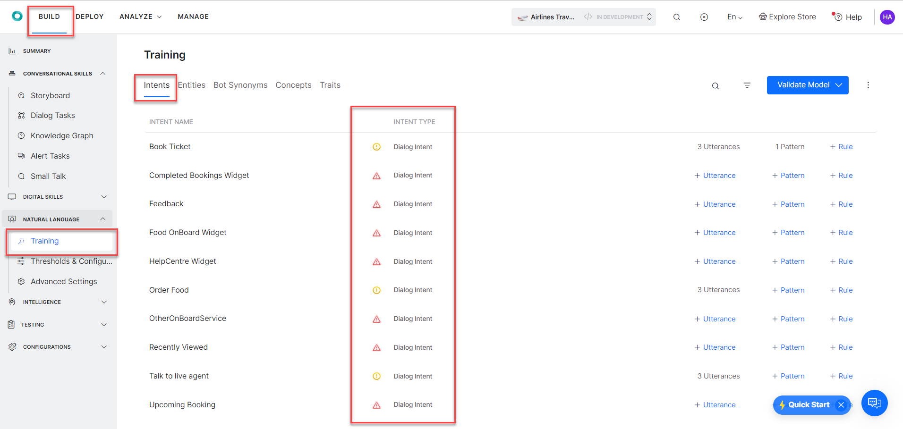
Note
The errors and warnings in this screen are examples. The ML validations vary based on the error or warning recommendation as explained in the Goal-Based NLU Training Validations section above.
-
Hover over the validation options and view the following recommendations:
-
Hover on the Error icon to view the recommendations to resolve the error.
Note
An Error is displayed when the intent has a definite problem that impacts the virtual assistant's accuracy or intent score. Errors are high severity problems.
-
Hover on the Warning icon and follow the instructions in the warning to enhance the training for ML utterances.
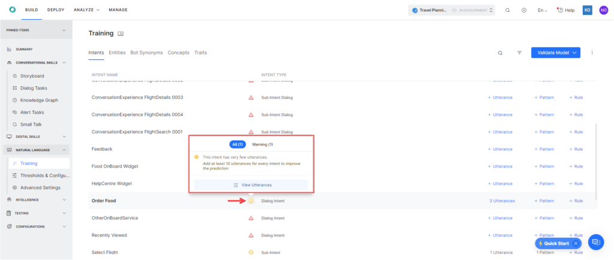Note
A warning is displayed when the issue impacts the VA's accuracy and it can be resolved. Warnings are less severe problems when compared to errors.
-
{kind=link}
{kind=link}
Once you click on the Intent with an error or warning, hover over the Bulb icon to view the summary of error or warning messages as illustrated below:
{kind=link}
Exporting and Importing Machine Learning Utterances¶
You can import and export ML utterances of a VA into another in CSV and JSON formats. You can choose between ‘In-Development’ or ‘Published’ tasks to export, whereas importing utterances always replace the latest copy of the task.
How to Export or Import ML Utterances¶
- On the VA’s Build menu, click Natural Language > Training.
-
The ‘In-Development’ version of the VA’s ML utterances open by default. If you want to see the utterances in the ‘Published’ version, toggle on the top right side of the window to Published.
Note
The export of ML utterances varies based on this selection as explained in the Versioning and Behavior of the Exported Utterances section below.
-
Click the options icon and select an option:
- Click Import Utterances and upload a CSV or JSON file with the utterances to import, or
- Click Export Utterances and select CSV or JSON formats to export the utterances. 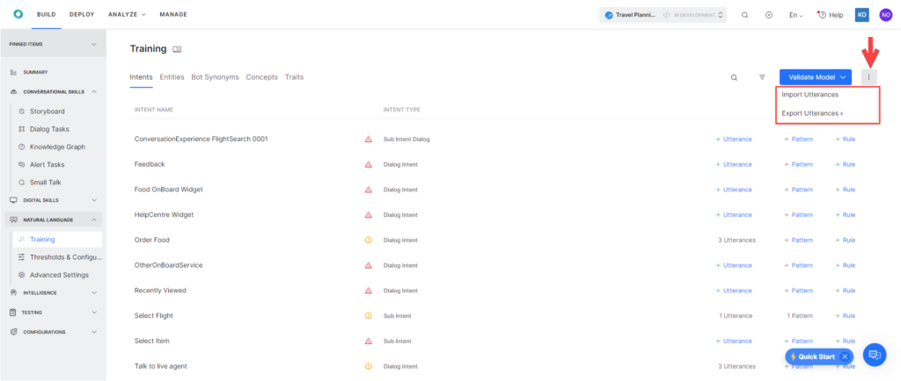
{kind=link}
Versioning and Behavior of Imported Utterances¶
- The imported utterances in CSV/JSON entirely replace the utterances present in the latest copy of the tasks.
- If the task is in Upgrade in Progress status, the utterances related to the task get entirely replaced with the task utterances present in the imported file. The utterances in the Published copy of the task aren’t affected.
- If the task is in the Published status, an Upgrade in Progress copy of the task gets created by default and the new utterances present in the imported file will be added to the upgraded copy. The utterances in the Published copy of the task aren’t affected.
Versioning and Behavior of Exported Utterances¶
- When you export a VA’s utterances, all the utterances related to every task type – alert, dialog – get exported.
- When you export an In Development copy of the VA, the utterances of all tasks in the latest available copy get exported.
- When you export a Published copy of the assistant, all the utterances in the published state get exported.
- In the case of multi-language VAs, the export of utterances includes utterances added in all of the languages.
- Export of utterances to JSON includes NER tagging present in the tasks, whereas CSV export doesn’t include them.
Training Recommendations¶
General ML Training Recommendations¶
- Give a balanced training for all the intents that the VA needs to detect, add approximately the same number of sample utterances. A skewed model may result in skewed results.
- Provide at least 8-10 sample utterances against each intent. The model with just 1-2 utterances will not yield any machine learning benefits. Ensure that the utterances are varied and you do not provide variations that use the same words in a different order.
- Avoid training common phrases that could be applied to every intent, for example, “I want to”. Ensure that the utterances are varied for larger variety and learning.
- After every change, train the model and check the model. Ensure that all the dots in the ML model are diagonal (in the True-positive and True-negative) quadrant and you do not have scattered utterances in other quadrants. Train the model until you achieve this.
- Regularly train the assistant with new utterances.
- Regularly review the failed or abandoned utterances and add them to the utterance list against a valid task or intent.
NLP Intent Detection Training Recommendations¶
- If there are a good number of sample utterances, try training the VA using Machine Learning approach first, before trying to train the fundamental meaning model.
- Define bot synonyms to build a domain dictionary such as pwd for a password; SB for a savings bank account.
- After every change to the model training, run the batch testing modules. Test suites are a means to perform regression testing of your VA’s ML model.
NLP Entity Detection Training Recommendations¶
The best approach to train entities is based on the type of entity as explained below:
- Entity types like List of Items (enumerated, lookup), City, Date, Country do not need any training unless the same entity type is used by multiple types in the same task. If the same entity type is used in a task, use either of the training models to find the entity within the user utterances.
- When the entity type is String or Description the recommended approach is to use Entity patterns and synonyms.
- For all other entity types, both NER and Patterns can be used in combination.
Entity Training Recommendations¶
- Use NER training where possible – NER coverage is higher than patterns.
- NER approach best suits detecting an entity where information is provided as unformatted data. For entities like Date and Time, the Platform has been trained with a large set of data.
- NER is a neural network-based model and will need to be trained with at least 8-10 samples to work effectively.